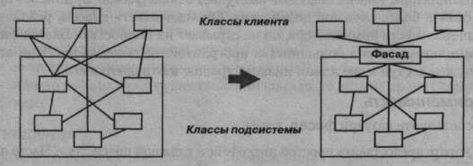
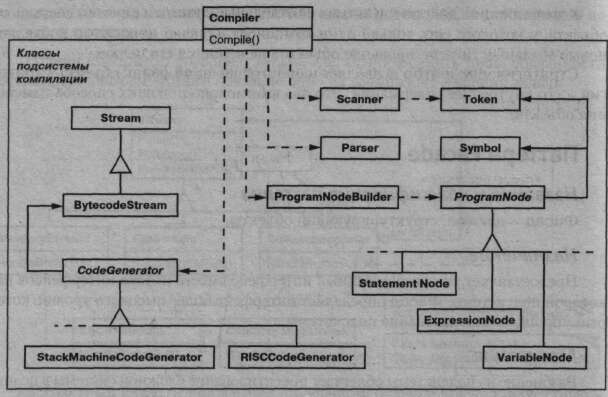
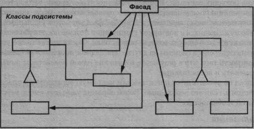
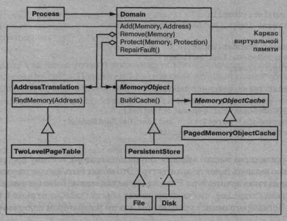

Приемы объектно-ориентированного проектирования
Паттерны проектирования
Глава 4. Структурные паттерны : Паттерн Facade
Паттерн Facade
Название и классификация паттерна
Фасад - паттерн, структурирующий объекты.
Назначение
Предоставляет унифицированный интерфейс вместо набора интерфейсов не- которой подсистемы. Фасад определяет интерфейс более высокого уровня, кото- рый упрощает использование подсистемы.
Мотивация
Разбиение на подсистемы облегчает проектирование сложной системы в целом. Общая цель всякого проектирования - свести к минимуму зависимость подсистем друг от друга и обмен информацией между ними. Один из способов решения этой задачи - введение объекта фасад, предоставляющий единый упрощенный интер- фейс к более сложным системным средствам.
Рассмотрим, например, среду программирования, которая дает приложени- ям доступ к подсистеме компиляции. В этой подсистеме имеются такие классы, как Scanner (лексический анализатор), Parser (синтаксический анализатор), ProgramNode (узел программы), BytecodeStream (поток байтовых кодов) и ProgramNodeBuilder (строитель узла программы). Все вместе они состав- ляют компилятор. Некоторым специализированным приложениям, возможно, понадобится прямой доступ к этим классам. Но для большинства клиентов ком- пилятора такие детали, как синтаксический разбор и генерация кода, обычно не нужны; им просто требуется откомпилировать некоторую программу. Для таких клиентов применение мощного, но низкоуровневого интерфейса подсистемы ком- пиляции только усложняет задачу.
Чтобы предоставить интерфейс более высокого уровня, изолирующий клиен- та от этих классов, в подсистему компиляции включен также класс Compiler (компилятор). Он определяет унифицированный интерфейс ко всем возможнос- тям компилятора. Класс Compiler выступает в роли фасада: предлагает простой интерфейс к более сложной подсистеме. Он «склеивает» классы, реализующие функциональность компилятора, но не скрывает их полностью. Благодаря фаса- ду компилятора работа большинства программистов облегчается. При этом те, кому нужен доступ к средствам низкого уровня, не лишаются его.
Применимость
Используйте паттерн фасад, когда:
- а хотите предоставить простой интерфейс к сложной подсистеме. Часто подсис- темы усложняются по мере развития. Применение большинства паттернов приводит к появлению меньших классов, но в большем количестве. Такую подсистему проще повторно использовать и настраивать под конкретные нужды, но вместе с тем применять подсистему без настройки становится труднее. Фасад предлагает некоторый вид системы по умолчанию, устраи- вающий большинство клиентов. И лишь те объекты, которым нужны более широкие возможности настройки, могут обратиться напрямую к тому, что находится за фасадом;
- а между клиентами и классами реализации абстракции существует много за- висимостей. Фасад позволит отделить подсистему как от клиентов, так и от других подсистем, что, в свою очередь, способствует повышению степе- ни независимости и переносимости;
- а вы хотите разложить подсистему на отдельные слои. Используйте фасад для определения точки входа на каждый уровень подсистемы. Если подсисте- мы зависят друг от друга, то зависимость можно упростить, разрешив под- системам обмениваться информацией только через фасады.
Структура
Участники
a Facade (Compiler) - фасад:
- - «знает», каким классам подсистемы адресовать запрос;
- - делегирует запросы клиентов подходящим объектам внутри подсистемы;
а Классы подсистемы (Scanner, Parser, ProgramNode и т.д.):
- - реализуют функциональность подсистемы;
- - выполняют работу, порученную объектом Facade;
- - ничего не «знают» о существовании фасада, то есть не хранят ссылок на него.
Отношения
Клиенты общаются с подсистемой, посылая запросы фасаду. Он переадресу- ет их подходящим объектам внутри подсистемы. Хотя основную работу выполня- ют именно объекты подсистемы, фасаду, возможно, придется преобразовать свой интерфейс в интерфейсы подсистемы.
Клиенты, пользующиеся фасадом, не имеют прямого доступа к объектам под- системы.
Результаты
У паттерна фасад есть следующие преимущества:
- а изолирует клиентов от компонентов подсистемы, уменьшая тем самым чис- ло объектов, с которыми клиентам приходится иметь дело, и упрощая рабо- ту с подсистемой;
- а позволяет ослабить связанность между подсистемой и ее клиентами. Зачас- тую компоненты подсистемы сильно связаны. Слабая связанность позволя- ет видоизменять компоненты, не затрагивая при этом клиентов. Фасадь: помогают разложить систему на слои и структурировать зависимости между объектами, а также избежать сложных и циклических зависимостей. Это мо- жет оказаться важным, если клиент и подсистема реализуются независимо Уменьшение числа зависимостей на стадии компиляции чрезвычайно важ- но в больших системах. Хочется, конечно, чтобы время, уходящее на пере- компиляцию после изменения классов подсистемы, было минимальным Сокращение числа зависимостей за счет фасадов может уменьшить количе- ство нуждающихся в повторной компиляции файлов после небольшой моди- фикации какой-нибудь важной подсистемы. Фасад может также упростить процесс переноса системы на другие платформы, поскольку уменьшается ве- роятность того, что в результате изменения одной подсистемы понадобится изменять и все остальные;
- а фасад не препятствует приложениям напрямую обращаться к классам под- системы, если это необходимо. Таким образом, у вас есть выбор между прос- тотой и общностью.
Реализация
При реализации фасада следует обратить внимание на следующие вопросы:
- а уменьшение степени связанности клиента с подсистемой. Степень связан- ности можно значительно уменьшить, если сделать класс Facade абстракт- ным. Его конкретные подклассы будут соответствовать различным реали- зациям подсистемы. Тогда клиенты смогут взаимодействовать с подсистемой через интерфейс абстрактного класса Facade. Это изолирует клиентов от ин- формации о том, какая реализация подсистемы используется. Вместо порождения подклассов можно сконфигурировать объект Facade различными объектами подсистем. Для настройки фасада достаточно заме- нить один или несколько таких объектов;
- а открытые и закрытые классы подсистем. Подсистема похожа на класс в том отношении, что у обоих есть интерфейсы и оба что-то инкапсулируют Класс инкапсулирует состояние и операции, а подсистема - классы. И если полезно различать открытый и закрытый интерфейсы класса, то не менее ра- зумно говорить об открытом и закрытом интерфейсах подсистемы. Открытый интерфейс подсистемы состоит из классов, к которым имеют до- ступ все клиенты; закрытый интерфейс доступен только для расширения подсистемы. Класс Facade, конечно же, является частью открытого интер- фейса, но это не единственная часть. Другие классы подсистемы также мо- гут быть открытыми. Например, в системе компиляции классы Parser и Scanner - часть открытого интерфейса. Делать классы подсистемы закрытыми иногда полезно, но это поддерживает- ся немногими объектно-ориентированными языками. И в C++, и в Smalltalk для классов традиционно использовалось глобальное пространство имен. Однако комитет по стандартизации C++ добавил к языку пространства имен [Str94], и это позволило разрешать доступ только к открытым классам под- системы.
Пример кода
Рассмотрим более подробно, как возвести фасад вокруг подсистемы компиляции. В подсистеме компиляции определен класс BytecodeStream, который реа- лизует поток объектов Bytecode. Объект Bytecode инкапсулирует байтовый код, с помощью которого описываются машинные команды. В этой же подсисте- ме определен еще класс Token для объектов, инкапсулирующих лексемы языка программирования.
Класс Scanner принимает на входе поток символов и генерирует поток лек- сем, по одной каждый раз:
class Scanner {
public:
Scanner(istream&);
virtual -Scanner();
virtual Token& Scan();
private:
istream& _inputStream;
};
Класс Parser использует класс ProgramNodeBuilder для построения де- рева разбора из лексем, возвращенных классом Scanner:
class Parser {
public:
Parser();
virtual -Parser();
virtual void Parse(Scanners, ProgramNodeBuilder&);
, };
Parser вызывает ProgramNodeBuilder для инкрементного построения де- рева. Взаимодействие этих классов описывается паттерном строитель:
class ProgramNodeBuilder {
public:
ProgramNodeBuilder();
virtual ProgramNode* NewVariable(
const char* variableName
) const;
virtual ProgramNode* NewAssignment(
ProgramNode* variable, ProgramNode* expression
) const;
virtual ProgramNode* NewReturnStatement(
ProgramNode* value
) const;
virtual ProgramNode* NewCondition(
ProgramNode* condition,
ProgramNode* truePart, ProgramNode* falsePart
) const;
// ...
ProgramNode* GetRootNode();
private:
ProgramNode* _node;
};
Дерево разбора состоит из экземпляров подклассов класса ProgramNode, таких как StatementNode, ExpressionNode и т.д. Иерархия классов ProgramNode — это пример паттерна компоновщик. Класс ProgramNode определяет интерфейс для манипулирования узлом программы и его потомками, если таковые имеются:
class ProgramNode {
public:
// манипулирование узлом программы
virtual void GetSourcePosition(int& line, int& index);
// ...
// манипулирование потомками
virtual void Add(ProgramNode*);
virtual void Remove(ProgramNode*);
// .. .
virtual void Traverse(CodeGeneratork);
protected:
ProgramNode();
};
Операция Traverse (обход) принимает объект CodeGenerator (кодогенера- тор) в качестве параметра. Подклассы ProgramNode используют этот объект для ге- нерации машинного кода в форме объектов Bytecode, которые помещаются в по- ток BytecodeStream. Класс CodeGenerator описывается паттерном посетитель:
class CodeGenerator {
public:
virtual void Visit(StatementNode*);
virtual void Visit(ExpressionNode*);
// ...
protected:
CodeGenerator(BytecodeStreamk);
protected:
BytecodeStreamk _output;
};
У CodeGenerator есть подклассы, например StackMachineCodeGenerator и RISCCodeGenerator, генерирующие машинный код для различных аппаратных архитектур.
Каждый подкласс ProgramNode реализует операцию Traverse и обращает- ся к ней для обхода своих потомков. Каждый потомок рекурсивно делает то же са- мое для своих потомков. Например, в подклассе ExpressionNode (узел выраже- ния) операция Traverse определена так:
void ExpressionNode::Traverse (CodeGenerator& eg) {
eg.Visit(this);
ListIterator i(_children);
for (i. First ( ) ; ! i . IsDone () ; i.NextO) {
i.Currentltem()->Traverse(eg);
}
}
Классы, о которых мы говорили до сих пор, составляют подсистему компиля- ции. А теперь введем класс Compiler, который будет служить фасадом, позволяю- щим собрать все эти фрагменты воедино. Класс Compiler предоставляет простой интерфейс для компилирования исходного текста и генерации кода для конкрет- ной машины:
class Compiler {
public:
Compiler();
virtual void Compile(istream&, BytecodeStream&);
};
void Compiler::Compile (
istream& input, BytecodeStreamk output
) {
Scanner scanner(input);
ProgramNodeBuilder builder;
Parser parser;
parser.Parse(scanner, builder);
RISCCodeGenerator generator(output);
ProgramNode* parseTree = builder.GetRootNode();
parseTree->Traverse(generator);
}
В этой реализации жестко «зашит» тип кодогенератора, поэтому программисту не нужно явно задавать целевую архитектуру. Это может быть вполне разумно, когда есть всего одна такая архитектура. Если же это не так, можно было бы изменить кон- структор класса Compiler, чтобы он принимал объект CodeGenerator в качестве параметра. Тогда программист указывал бы, каким генератором пользоваться при инстанцировании объекта Compiler. Фасад компилятора можно параметризовать и другими участниками, скажем, объектами Scanner и ProgramNodeBuilder, что повышает гибкость, но в то же время сводит на нет основную цель фасада - предо- ставление упрощенного интерфейса для наиболее распространенного случая.
Известные применения
Пример компилятора в разделе «Пример кода» навеян идеями из системы компиляции языка ObjectWorks\Smalltalk [РагЭО].
В каркасе ЕТ++ [WGM88] приложение может иметь встроенные средства инспектирования объектов во время выполнения. Они реализуются в отдельной подсистеме, включающей класс фасада с именем ProgrammingEnvironment. Этот фасад определяет такие операции, как InspectObject и InspectClass для доступа к инспекторам.
Приложение, написанное в среде ЕТ++, может также запретить поддержку инспектирования. В таком случае класс ProgrammingEnvironment реализует соответствующие запросы как пустые операции, не делающие ничего. Только под- класс ETProgrammingEnvironment реализует эти операции так, что они отобра- жают окна соответствующих инспекторов. Приложению неизвестно, доступно инспектирование или нет. Здесь мы встречаем пример абстрактной связанности между приложением и подсистемой инспектирования.
В операционной системе Choices [CIRM93] фасады используются для состав- ления одного каркаса из нескольких. Ключевыми абстракциями в системе Choices являются процессы, память и адресные пространства. Для каждой из них есть соот- ветствующая подсистема, реализованная в виде каркаса. Это обеспечивает поддерж- ку переноса Choices на разные аппаратные платформы. У двух таких подсистем есть «представители», то есть фасады. Они называются FileSystemlnterface (па- мять) и Domain (адресные пространства).
Например, для каркаса виртуальной памяти фасадом служит Domain. Класс Domain представляет адресное пространство. Он обеспечивает отображение между виртуальными адресами и смещениями объектов в памяти, файле или на устрой- стве длительного хранения. Базовые операции класса Domain поддерживают до- бавление объекта в память по указанному адресу, удаление объекта из памяти и обработку ошибок отсутствия страниц.
Как видно из вышеприведенной диаграммы, внутри подсистемы виртуальной памяти используются следующие компоненты:
- a MemoryObject представляет объекты данных;
- a MemoryObj ectCache кэширует данные из объектов MemoryObj ects в фи- зической памяти. MemoryObj ectCache - это не что иное, как объект Стра- тегия, в котором локализована политика кэширования;
- a AddressTranslat ion инкапсулирует особенности оборудования трансля- ции адресов.
Операция RepairFault вызывается при возникновении ошибки из-за отсут- ствия страницы. Domain находит объект в памяти по адресу, где произошла ошиб- ка и делегирует операцию RepairFault кэшу, ассоциированному с этим объек- том. Поведение объектов Domain можно настроить, заменив их компоненты.
Родственные паттерны
Паттерн абстрактная фабрика допустимо использовать вместе с фасадом, чтобы предоставить интерфейс для создания объектов подсистем способом, не за- висимым от этих подсистем. Абстрактная фабрика может выступать и как аль- тернатива фасаду, чтобы скрыть платформенно-зависимые классы.
Паттерн посредник аналогичен фасаду в том смысле, что абстрагирует функ- циональность существующих классов. Однако назначение посредника - абстра- гировать произвольное взаимодействие между «сотрудничающими» объектами. Часто он централизует функциональность, не присущую ни одному из них. Кол- леги посредника обмениваются информацией именно с ним, а не напрямую меж- ду собой. Напротив, фасад просто абстрагирует интерфейс объектов подсистемы, чтобы ими было проще пользоваться. Он не определяет новой функциональности, и классам подсистемы ничего неизвестно о его существовании.
Обычно требуется только один фасад. Поэтому объекты фасадов часто бы- вают одиночками.